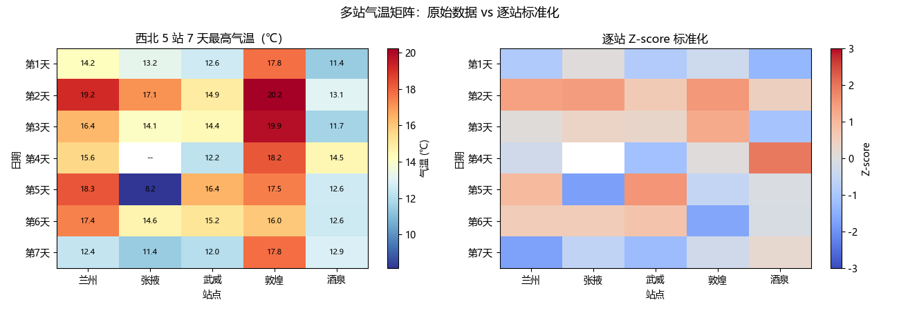

备注
Go to the end to download the full example code.
多站气温矩阵的计算与可视化#
本示例演示 NumPy 处理气象多站气温矩阵的完整链路：
创建 7 天 × 5 站 的气温矩阵，沿 axis 做逐站均值 / 逐日极值，
再逐站做 Z-score 标准化，最后用 imshow 热力图把原始矩阵和标准化矩阵画出来。
气象背景：矩阵的行代表时间（天），列代表站点。
- mean(axis=0)：压缩行 → 得到每个站的日均温；
- max(axis=1) / min(axis=1)：压缩列 → 得到每天的区域极值；
- 标准化必须逐站（按列）做，不能全局标准化，否则会抹平站点气候差异。
本脚本自包含、无任何外部文件依赖：数据由固定随机种子在内存中生成，可直接运行。
运行需要安装 numpy 与 matplotlib。
1. 导入库并配置中文字体#
import numpy as np
import matplotlib.pyplot as plt
# 配置中文字体（按优先级尝试多款，保证不同平台均能显示中文）
plt.rcParams["font.sans-serif"] = [
"Microsoft YaHei", "SimHei", "Noto Sans CJK SC", "DejaVu Sans",
]
# 解决坐标轴负号 "-" 显示为方块的问题
plt.rcParams["axes.unicode_minus"] = False
2. 创建 7 天 x 5 站的气温矩阵#
西北 5 个站点的名称与各自的气候平均气温（℃，仅作示意）
stations = ["兰州", "张掖", "武威", "敦煌", "酒泉"]
base_temp = [16.2, 13.5, 14.0, 18.6, 12.8] # 各站多年平均
days = 7
rng = np.random.default_rng(20260817) # 固定种子，保证结果可复现
# 每个站：气候均值 + 日偏差（模拟天气波动）+ 站点内部噪声
temp_matrix = np.zeros((days, len(stations)))
for j, base in enumerate(base_temp):
daily_deviation = rng.normal(0, 2.0, days) # 每天的天气起伏
temp_matrix[:, j] = base + daily_deviation
# 故意在 1 个位置埋一个缺测 NaN，展示 NaN 安全统计
temp_matrix[3, 1] = np.nan
print("气温矩阵形状 (时间天数, 站点数):", temp_matrix.shape)
print("西北 5 站 7 天气温矩阵（℃）：")
print(np.round(temp_matrix, 2))
气温矩阵形状 (时间天数, 站点数): (7, 5)
西北 5 站 7 天气温矩阵（℃）：
[[14.24 13.23 12.64 17.75 11.42]
[19.2 17.09 14.93 20.24 13.11]
[16.36 14.11 14.44 19.87 11.67]
[15.58 nan 12.23 18.24 14.5 ]
[18.29 8.16 16.44 17.49 12.6 ]
[17.42 14.61 15.19 15.97 12.56]
[12.4 11.44 12.03 17.81 12.88]]
3. 轴向统计：逐站均值 与 逐日极值#
axis=0：沿行方向压缩 → 每个站点的平均气温
station_mean = np.nanmean(temp_matrix, axis=0)
print("\n各站点平均气温（℃）：")
print(np.round(station_mean, 2))
# axis=1：沿列方向压缩 → 每天的区域最高/最低气温
day_max = np.nanmax(temp_matrix, axis=1)
day_min = np.nanmin(temp_matrix, axis=1)
print("\n逐日区域最高气温（℃）：", np.round(day_max, 2))
print("逐日区域最低气温（℃）：", np.round(day_min, 2))
各站点平均气温（℃）：
[16.21 13.11 13.98 18.2 12.68]
逐日区域最高气温（℃）： [17.75 20.24 19.87 18.24 18.29 17.42 17.81]
逐日区域最低气温（℃）： [11.42 13.11 11.67 12.23 8.16 12.56 11.44]
4. 逐站 Z-score 标准化（NaN 安全，按列处理）#
每个站用自己的均值、标准差做标准化；NaN 位置保持 NaN
station_std = np.nanstd(temp_matrix, axis=0)
station_std = np.where(station_std == 0, 1e-8, station_std) # 防除零
zscore = (temp_matrix - station_mean) / station_std
print("\n标准化矩阵形状：", zscore.shape)
print("标准化后各元素大致落在 [-3, 3] 区间，代表相对该站气候的多偏……")
标准化矩阵形状： (7, 5)
标准化后各元素大致落在 [-3, 3] 区间，代表相对该站气候的多偏……
5. 热力图可视化：原始气温矩阵 与 标准化矩阵#
fig, axes = plt.subplots(1, 2, figsize=(13, 4.5))
# 左图：原始气温矩阵
im0 = axes[0].imshow(
temp_matrix, aspect="auto", cmap="RdYlBu_r",
origin="upper",
)
axes[0].set_xticks(range(len(stations)))
axes[0].set_xticklabels(stations)
axes[0].set_yticks(range(days))
axes[0].set_yticklabels([f"第{i+1}天" for i in range(days)])
axes[0].set_title("西北 5 站 7 天最高气温（℃）")
axes[0].set_xlabel("站点")
axes[0].set_ylabel("日期")
fig.colorbar(im0, ax=axes[0], label="气温 (℃)")
# 右图：标准化矩阵
im1 = axes[1].imshow(
zscore, aspect="auto", cmap="coolwarm",
origin="upper",
vmin=-3, vmax=3,
)
axes[1].set_xticks(range(len(stations)))
axes[1].set_xticklabels(stations)
axes[1].set_yticks(range(days))
axes[1].set_yticklabels([f"第{i+1}天" for i in range(days)])
axes[1].set_title("逐站 Z-score 标准化")
axes[1].set_xlabel("站点")
axes[1].set_ylabel("日期")
fig.colorbar(im1, ax=axes[1], label="Z-score")
# 在原始矩阵的每个格子上标注数值（NaN 显示为 --）
for i in range(days):
for j in range(len(stations)):
val = temp_matrix[i, j]
text = f"{val:.1f}" if not np.isnan(val) else "--"
axes[0].text(j, i, text, ha="center", va="center",
color="black", fontsize=8)
fig.suptitle("多站气温矩阵：原始数据 vs 逐站标准化", fontsize=13)
plt.tight_layout()
plt.show()
print("\n示例画廊运行完毕。")

示例画廊运行完毕。
Total running time of the script: (0 minutes 0.208 seconds)